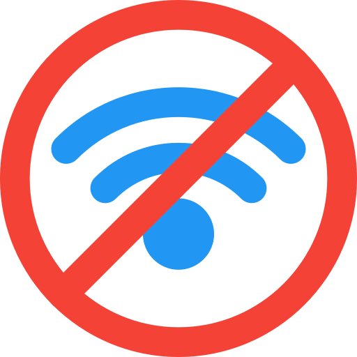
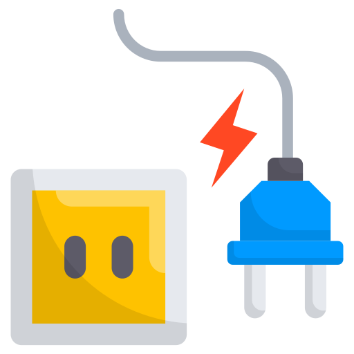
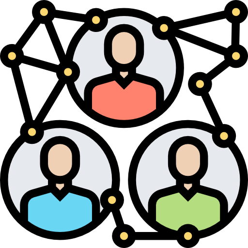
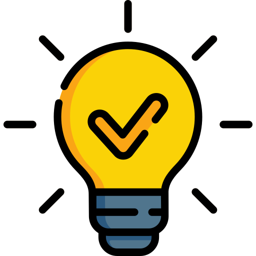
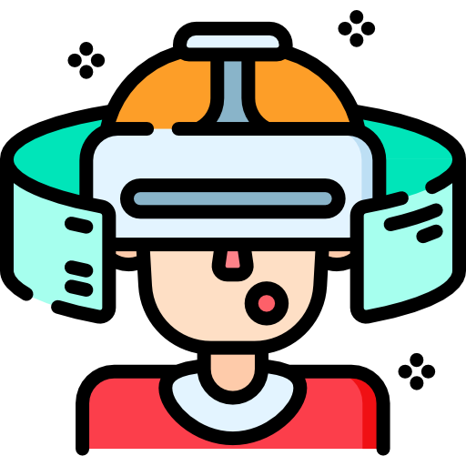

Abre las secciones y haz clic en los íconos circulares para descubrir información secundaria.
La brecha digital se refiere a la desigualdad en el acceso, uso y apropiación de las Tecnologías de la Información y la Comunicación (TIC). Según datos de la CEPAL, aproximadamente un tercio de la población en América Latina y el Caribe aún carece de acceso a internet de calidad.
.jpg)
👇 Haz clic en el ícono

La desconexión genera un efecto en cadena: los estudiantes no pueden acceder a educación en línea, los pacientes pierden la oportunidad de usar la telemedicina y los trabajadores quedan excluidos de plataformas de empleo remoto y comercio electrónico.
.jpg)
👇 Haz clic en el ícono

El impacto más grave es la perpetuación de la pobreza y la desigualdad económica. Al estar excluidos del ecosistema digital, los sectores vulnerables pierden competitividad, ampliando la brecha económica entre quienes dominan la tecnología y quienes no.
.jpg)
👇 Haz clic en el ícono

Como especialistas en TI, las soluciones incluyen: desarrollo de software optimizado para dispositivos de gama baja, implementación de infraestructura pública (redes comunitarias) y el fomento de startups con modelos de negocio inclusivos.
.jpg)
👇 Haz clic en el ícono

¡El código que escribimos tiene impacto social! Diseñemos tecnología pensando en la accesibilidad universal. Asegúrate de que tus plataformas sean inclusivas y no asumas que todos los usuarios tienen internet de alta velocidad.
.jpg)
👇 Haz clic en el ícono

Referencias
Comisión Económica para América Latina y el Caribe (CEPAL). (2022). Estado de la banda ancha en América Latina y el Caribe. Naciones Unidas. https://www.cepal.org
Grupo Banco Mundial. (2021). Informe sobre el desarrollo mundial 2021: Datos para una vida mejor. Banco Mundial. https://www.bancomundial.org
Unión Internacional de Telecomunicaciones (UIT). (2023). Medir el desarrollo digital: El hecho y las cifras. UIT. https://www.itu.int